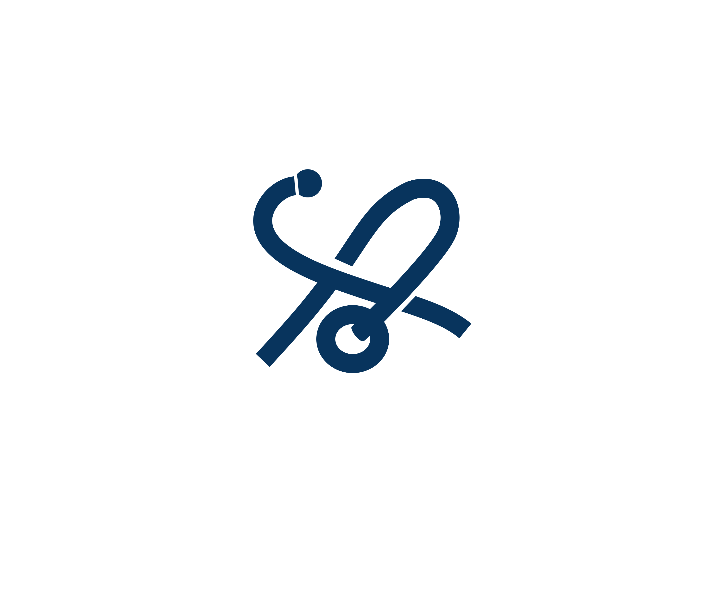

学术会议
会议会务与数字化支持
提供覆盖学术会议全周期的一体化解决方案，包括会议策划与执行、专家管理、注册报名、现场运营、线上直播与点播、会议网站建设及数字化会务平台支持，提升会议组织效率与学术传播效果

医 心 科 技医心科技业务覆盖医学写作、会议会务、营销推广、科研服务、产品立项、战略规划等，依托广泛的内外部专家资源和完整的医药产业链数据，可为您的个性化需求提供量身定制的解决方案。已与国内外一流科研院所、顶级医药企业及初创生物医药企业建立了深度合作关系，帮助学术机构和医药企业在创医学研究成果发表、新药物的研发支持、市场策略制定以及全球化业务拓展等方面提供全方位的服务，并为医药行业的可持续创新注入了新的动能。
提供覆盖学术会议全周期的一体化解决方案，包括会议策划与执行、专家管理、注册报名、现场运营、线上直播与点播、会议网站建设及数字化会务平台支持，提升会议组织效率与学术传播效果
聚焦医学内容生产与学术价值传播，提供医学论文撰写与润色、临床研究成果整理、医学综述、专家共识、学术幻灯片、医学教育材料及数字内容开发等服务，助力科研成果高质量输出与学术影响力提升
依托完整的医药产业链数据库与行业专家网络，开展产品立项评估、竞争格局分析、市场准入研究、政策趋势解读、商业化路径设计及战略规划咨询，为企业决策提供高质量洞察支持
团队成员来自医学事务、临床研究、市场准入、学术传播及医药咨询等多个专业领域，拥有丰富的行业实践经验。依托完善的专家资源网络与产业数据库体系，医心科技能够快速响应客户需求，为项目提供从策略规划到落地执行的全流程支持
欢迎与我们联系，我们将为您提供专业、高效、值得信赖的解决方案